Taller Integrador II · Defensa final · Paso 2 de 3
Tres conceptos para elegir uno.
Cada concepto trae cuatro láminas de muestra hechas con el motor: portada, cifras clave, proceso y conclusión. Las cifras y los textos son de ejemplo y están marcados así. Las cifras reales saldrán del archivo de cifras maestras del informe final.
28-11Elegir: Ruta 213 o Plano vivo
Las mismas tres láminas, con las cifras del informe final y el sistema de la Fase 4 (Michroma con acento en itálica, la aguja). Cambia solo el recurso que se repite.
1 · Ruta 213: el colectivo de referencia y una ruta de avance de 0 a 213 km. Abrir
2 · Plano vivo: el plano del auto con los dos motores, y las cifras como cotas. Abrir
ABanco de pruebas
Presentar con el motor →La defensa como un ensayo en el dinamómetro: cada afirmación es una lectura medida, que es lo que pidió Brito («medimos… y encontramos…»).
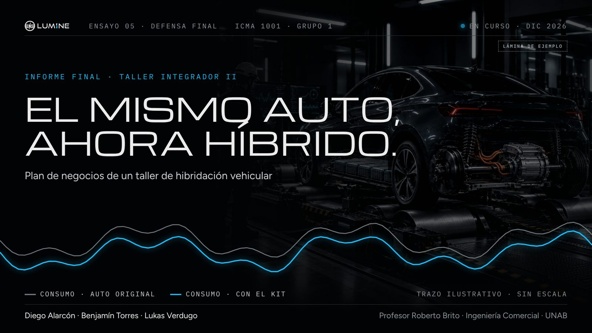
01 · Portada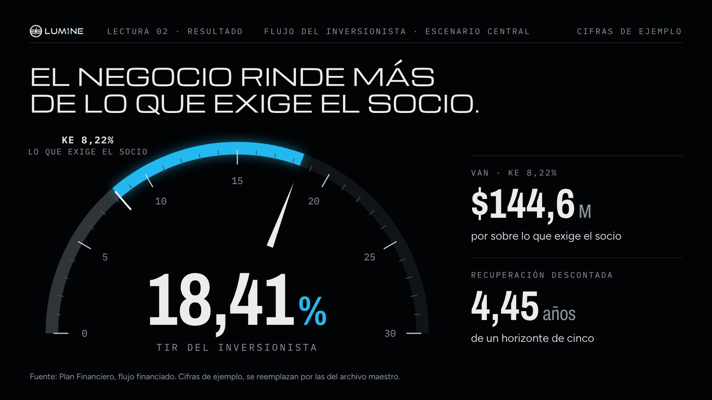
02 · Cifras clave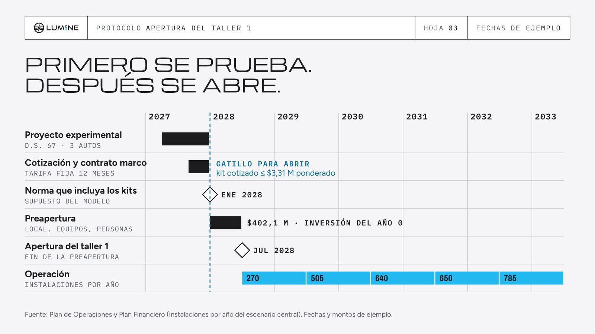
03 · Proceso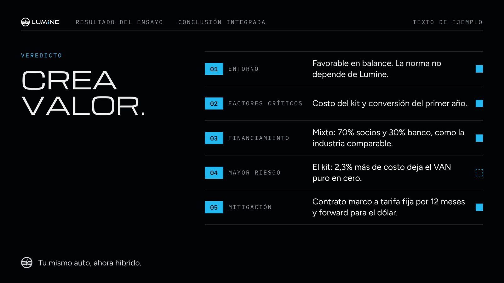
04 · Conclusión- Blanco y negro
- Blanco: la hoja del protocolo (evidencia y plan). Negro: la pantalla del instrumento (resultados).
- Tipografía
- Michroma en titulares, para dar continuidad con las Fases 3 y 4; Archivo Condensed en cifras y Plex Mono en lecturas.
- Recurso propio
- La aguja que elogió Brito, usada una sola vez, en la cifra que más importa. La Carta Gantt como protocolo de ensayo, con el gatillo para abrir.
- Riesgo
- Es el más parecido a las Fases 3 y 4. Si se abusa de las etiquetas de instrumento, puede volver a verse técnico y frío.
BPlano vivo
Presentar con el motor →Un solo dibujo técnico del auto recorre toda la defensa. Cada capítulo le suma una capa y las cifras se anclan al dibujo con cotas y llamadas.
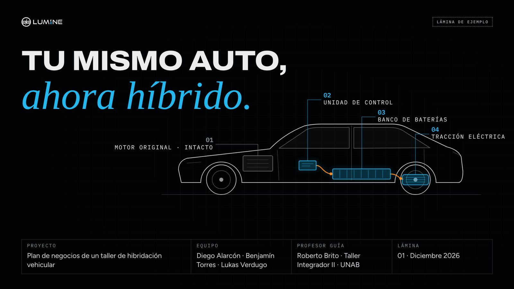
01 · Portada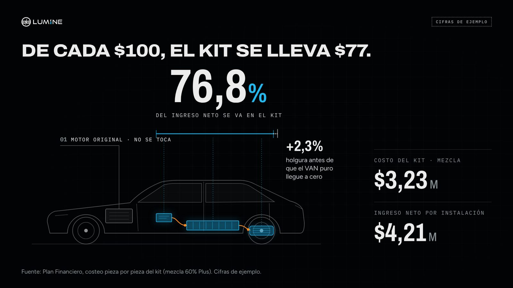
02 · Cifras clave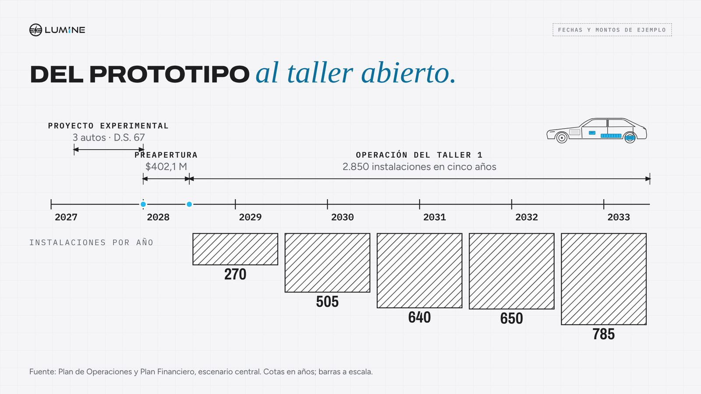
03 · Proceso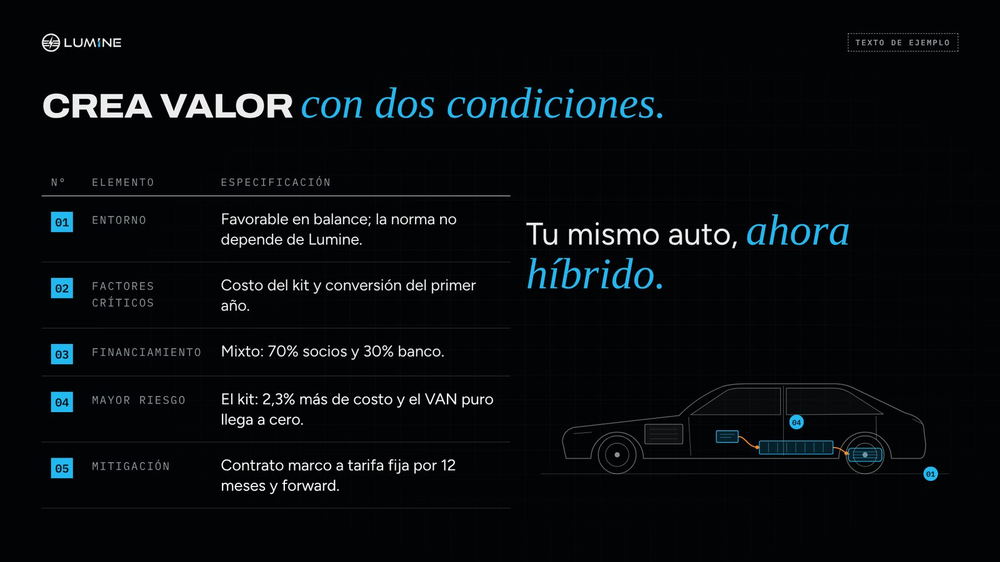
04 · Conclusión- Blanco y negro
- Blanco: el plano en papel (calendario y evidencia). Negro: el auto encendido (resultados).
- Tipografía
- La de la marca: Archivo SemiExpanded en mayúsculas, Instrument Serif itálica como remate (solo en portada, proceso y cierre) y Plex Mono en cotas.
- Recurso propio
- El plano del kit de las Fases 1 y 2, ahora como protagonista. Un margen de 2,3% en el costo del kit se ve como una cota.
- Riesgo
- Las láminas que no tienen relación física con el auto (expertos, encuesta) piden más ingenio para anclarse al dibujo.
CPrimera plana
Presentar con el motor →Cada lámina es la portada de un diario que informa un hallazgo: un titular que afirma, una cifra a tamaño de portada y la fuente como pie de foto.
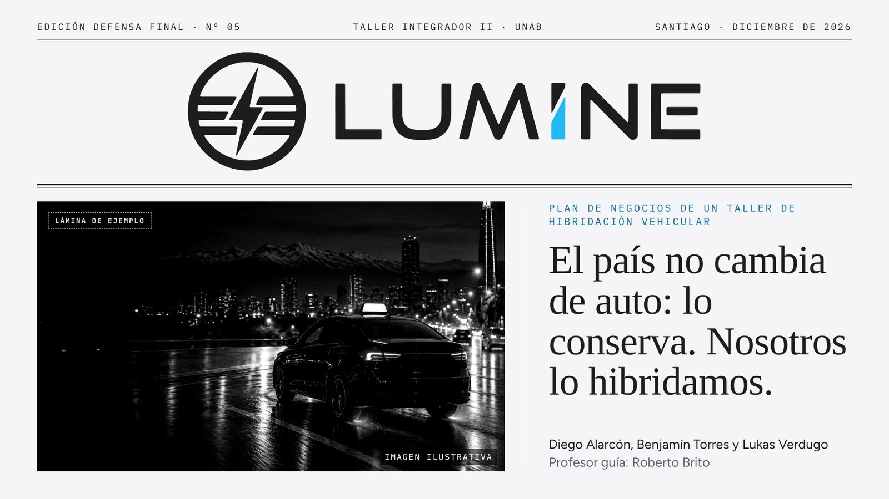
01 · Portada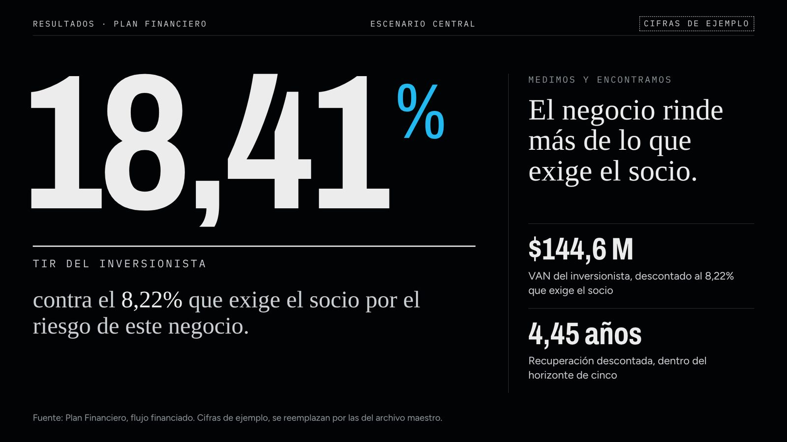
02 · Cifras clave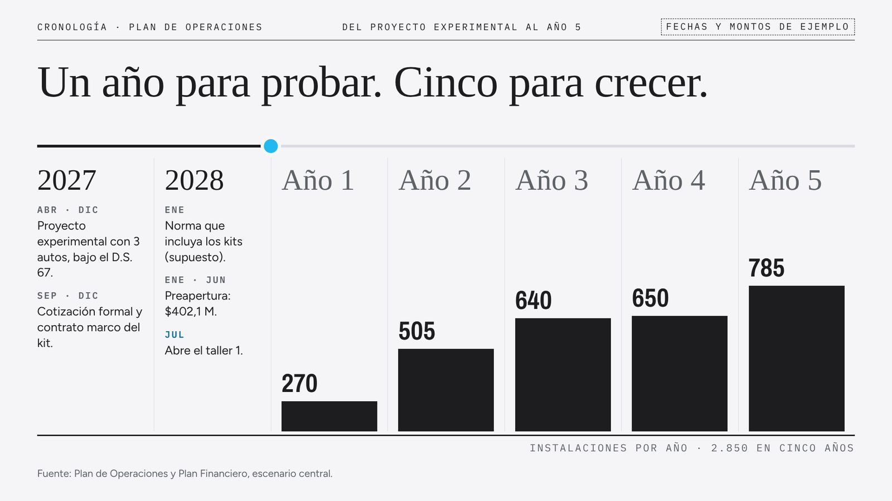
03 · Proceso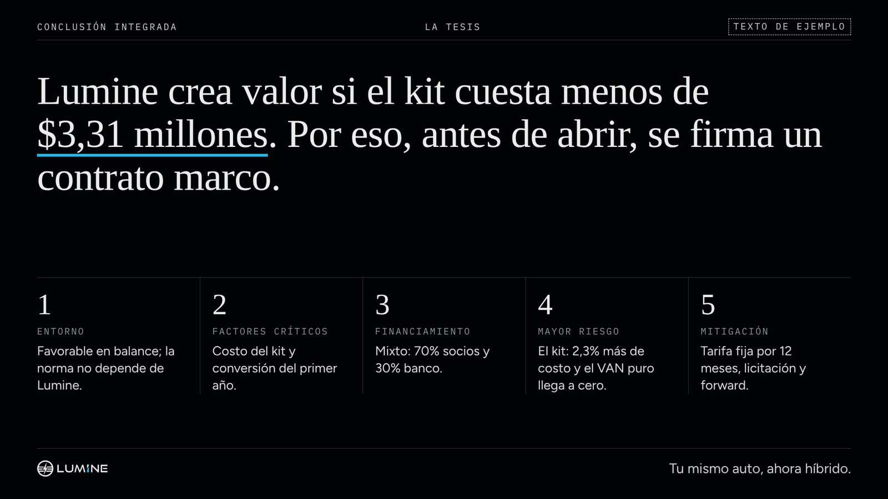
04 · Conclusión- Blanco y negro
- Blanco: papel (investigación, evidencia y cronología). Negro: la edición de resultados.
- Tipografía
- Instrument Serif en titulares, en minúsculas, rompe con las mayúsculas de las fases; Archivo Condensed en cifras; el celeste aparece una vez por lámina.
- Recurso propio
- La voz de las Fases 1 y 2 («El país no cambia de auto: lo conserva») con cifras monumentales y cada número comparado con su referencia.
- Riesgo
- Es el más distinto de las Fases 3 y 4: la defensa se verá como una pieza nueva y no como continuación.
En el motor: → avanza, O abre la vista del orador con el guion de ejemplo, F pantalla completa, Z lupa, L láser. Funciona sin internet al copiar la carpeta lumine-presentaciones completa.